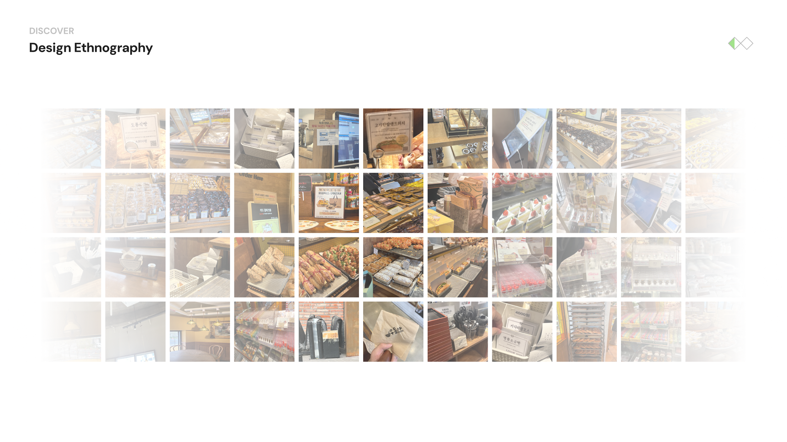
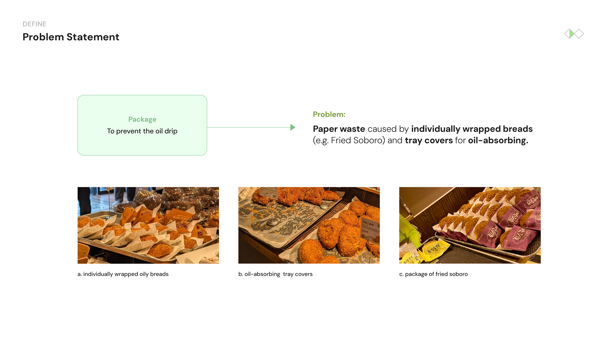
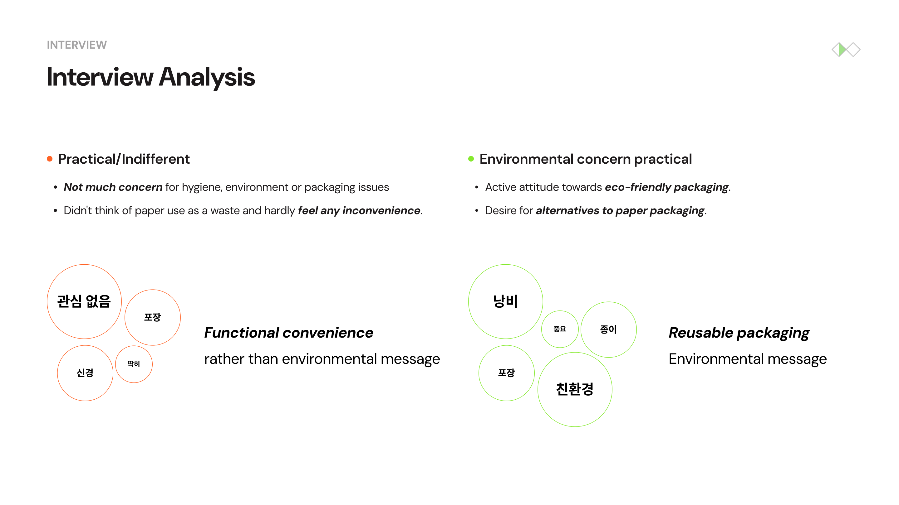
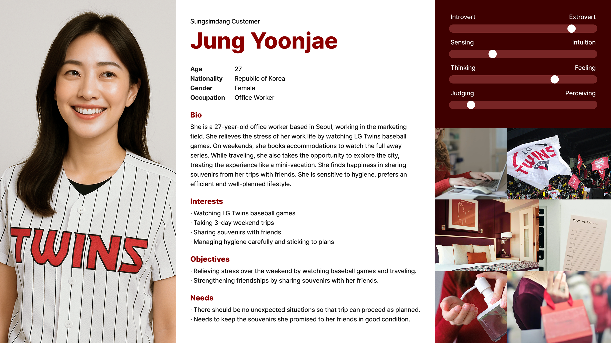
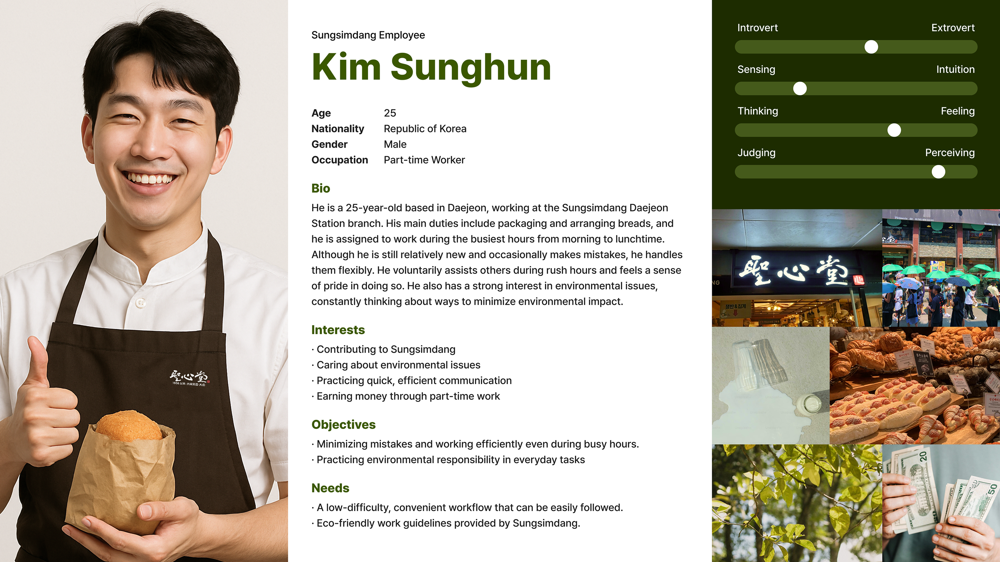
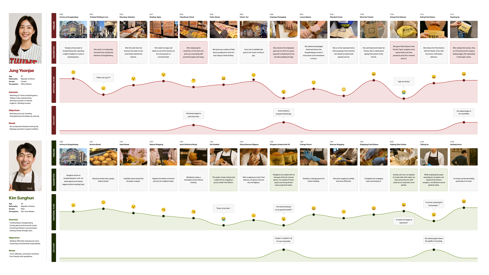
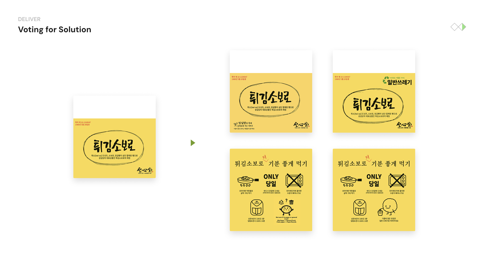
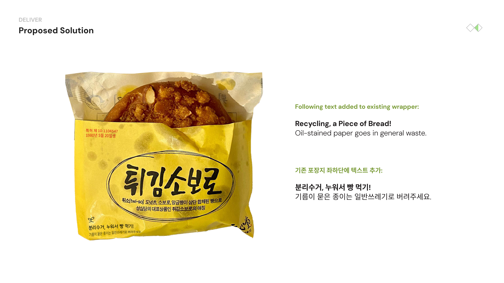
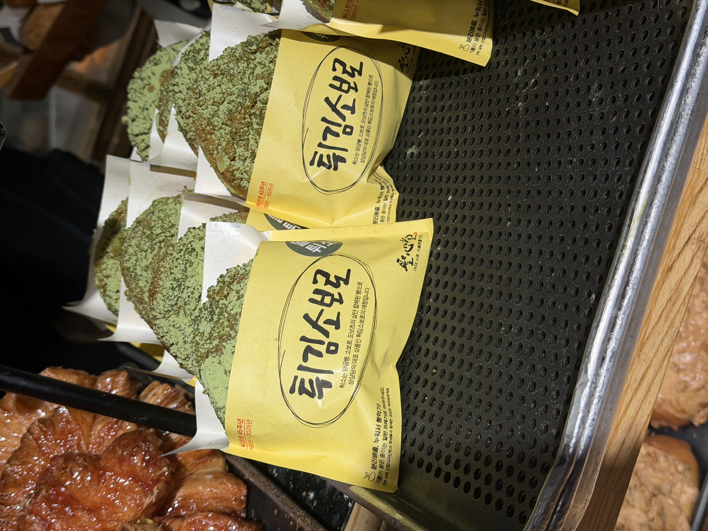
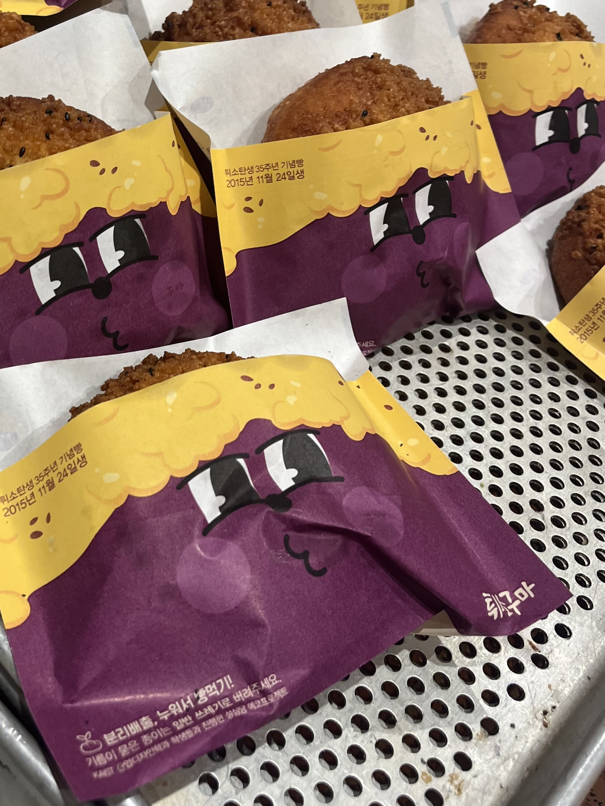

Problem
This project followed the Double Diamond design process, moving through stages of discovery, definition, development, and delivery to identify and address sustainability issues in bakery packaging
Sungsimdang is a well-known bakery in Korea that has consistently shown interest in environmental sustainability, as demonstrated through initiatives such as the Eco-Sungsimdang project. This project aimed to further support the company's environmental efforts by identifying opportunities to make its packaging more eco-friendly.
To explore this, we conducted a design ethnography study, visiting the Sungsimdang store to observe real user behaviors and identify practical issues related to packaging.

Through affinity diagramming, we organized our observations into key themes, and using the KJ technique, we defined two main problem areas:
Paper waste caused by individually wrapped breads, such as Fried Soboro, along with oil-absorbing tray covers.

To gain deeper insights, we conducted interviews with 14 participants who had previously purchased Fried Soboro, focusing on their attitudes toward practicality, environmental concerns, hygiene, and acceptance of packaging.

Based on these insights, we developed multiple user scenarios and created personas, journey maps, and storyboards representing both customers and employees.



Through this process, we identified a critical pain point:
A customer throws the Fried Soboro wrapper into the paper recycling bin and feels proud for recycling, but the oil-soaked wrapper is actually general waste. The oil absorbed by the wrapper makes the paper non-recyclable, which can even disrupt the recycling process.
This led us to refine our problem definition: Oil-stained Fried Soboro wrappers are frequently mistaken for recyclable paper, even though they must be disposed of as general waste.
We hypothesized that this confusion occurs because the existing packaging lacks clear disposal labeling. To verify this, we consulted the Department of Resource Circulation, which confirmed that Fried Soboro wrappers are officially classified as general waste but are often incorrectly placed in recycling bins.
Solution
As a solution, we proposed adding clear disposal labeling to the packaging. Through ideation, we developed a concept that reflects Sungsimdang's identity as a bakery by using bread-themed visual cues and playful messaging about proper waste separation.


To validate the idea, we conducted a cultural probe with 6 participants and an A/B test with 60 participants, both of which showed that the new packaging message significantly improved correct waste-sorting behavior.
Applied Outcome
The final design was eventually applied to the actual Fried Soboro packaging, and the labeled packaging is now commercially used in Sungsimdang stores today.

